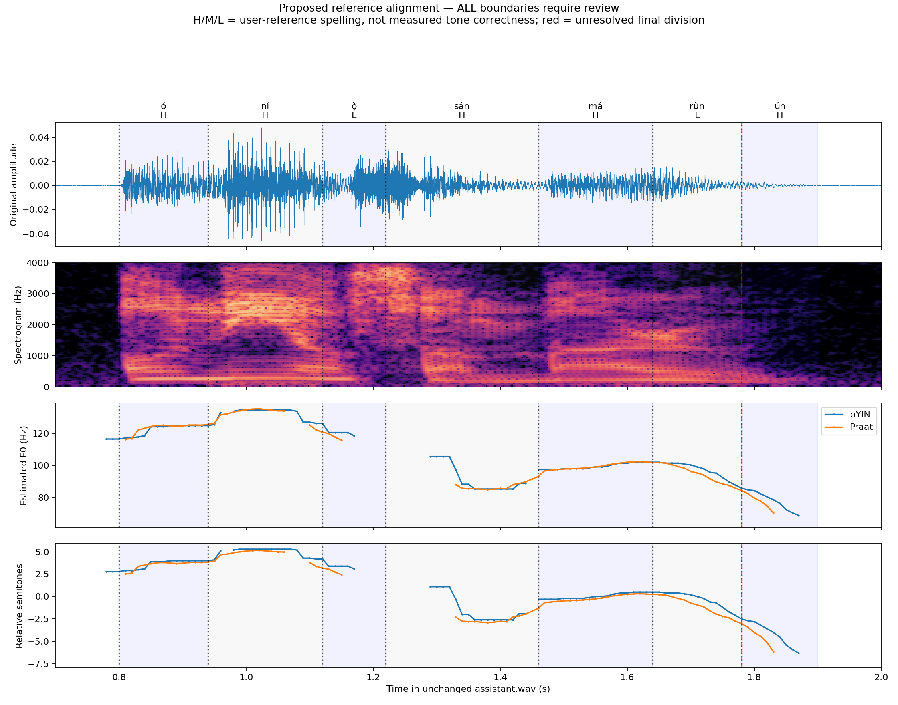

Reference only: ó ní ọ̀sán márùn-ún. Labels do not certify acoustic realization. No tone or pronunciation scores.
As a native Yorùbá speaker, I perceive the entire AI-generated utterance as unnatural. The entire utterance has an unusually nasal/nasalized quality, not merely the final word. The tonal/melodic realization sounds unnatural for Yorùbá. Some consonant/nasal portions appear unusually prominent or lengthened. Although the lexical content is recognizable, recognizable/correct text must NOT be treated as evidence of correct pronunciation.
All boundaries are provisional. The final rùn/ún split is a review placeholder, not a detected boundary. Listen to the whole utterance first; segment playback can create artificial boundaries.

| Word | Reference unit | Reference tone | Seconds | Playback | Boundary evidence |
|---|---|---|---|---|---|
| ó | ó | H | 0.80–0.94 | Provisional speech onset; existing o event at 0.84 s; n event at 0.94 s | |
| ní | ní | H | 0.94–1.12 | Existing n/i events at 0.94/1.00 s; next o event at 1.12 s | |
| ọ̀sán | ọ̀ | L | 1.12–1.22 | Existing o event at 1.12 s and s event at 1.22 s | |
| ọ̀sán | sán | H | 1.22–1.46 | Existing s/a/n events at 1.22/1.30/1.36 s; m event at 1.46 s; nasal duration not isolated | |
| márùn-ún | má | H | 1.46–1.64 | Existing m/a events at 1.46/1.54 s; r event at 1.64 s | |
| márùn-ún | rùn | L | 1.64–1.78 | r/u events at 1.64/1.72 s; end at 1.78 s is a review placeholder, not a detected syllable boundary | |
| márùn-ún | ún | H | 1.78–1.90 | Start at 1.78 s is a review placeholder; n event at 1.82 s does not prove a separate consonant or vowel nucleus; end from speech envelope |
Playback seeks within the original WAV at normal speed and volume; no derived clips or transformations. Give corrections by unit and timestamp. Nasal material has not been removed or duration-normalized.